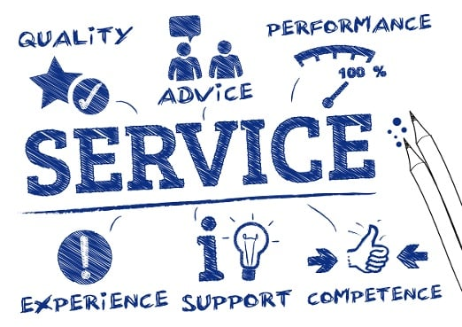

TeamAtrix is a multidisciplinary consulting and management solutions firm dedicated to helping organizations unlock their full potential. We partner with businesses across diverse sectors to design, implement, and optimize strategies that deliver measurable results and sustainable growth.
Our strength lies in integrating expertise across multiple operational verticals — from project execution and financial strategy to operational excellence, human resource management, quality assurance, and strategic marketing. This breadth enables us to deliver holistic, end‑to‑end solutions that are both practical and scalable.
With deep specialization in healthcare consulting, we bring a nuanced understanding of clinical, administrative, and regulatory landscapes. Our experience spans hospital administration, patient‑centric process design, and healthcare technology integration — helping clients improve care delivery, streamline operations, and meet compliance standards with confidence.
Beyond healthcare, we support industries seeking to modernize infrastructure, enhance customer management systems, and strengthen workforce performance. By combining data‑driven insights with a human‑centered approach, we ensure every engagement is tailored to the unique culture, challenges, and goals of our clients.
At TeamAtrix, we believe sustainable success is built on adaptability, innovation, and collaboration. Our consultants act as trusted partners — not just problem solvers — guiding clients through every stage of their transformation journey and equipping them with the tools to thrive in a competitive landscape.
We help healthcare providers achieve regulatory compliance, streamline patient‑centric processes, and integrate modern technologies. Our guidance enhances clinical efficiency, reduces operational waste, and ensures organizations can deliver consistent, high‑quality care while meeting stringent industry standards with confidence.
We design and implement efficient workflows that reduce costs, eliminate bottlenecks, and improve delivery timelines. Our project execution strategies ensure initiatives are completed on time, within budget, and with measurable impact — empowering organizations to operate at peak performance levels.
We develop financial strategies that balance growth, stability, and profitability. By applying data‑driven insights and performance analytics, we help clients optimize costs, increase revenue, and build a resilient financial foundation that supports long‑term success in competitive markets.
We help organizations build strong, engaged, and skilled teams by improving HR processes, fostering positive workplace culture, and aligning workforce strategies with business goals. The result is a motivated and productive team ready to meet evolving industry demands.
We create branding strategies and marketing campaigns that connect with target audiences on multiple levels. By integrating creative design, market research, and digital outreach, we ensure brands stand out, engage customers, and drive measurable growth across channels.
We deliver end-to-end IT solutions tailored to business needs — from software development and hardware deployment to system integration and interface design. Our consulting expertise spans HIS, HRMS, and enterprise platforms, helping clients modernize infrastructure, improve interoperability, and drive digital transformation.
Our team builds scalable, secure, and user-friendly software applications that align with operational goals. Whether it's custom platforms, mobile apps, or cloud-based tools, we ensure seamless performance, intuitive interfaces, and long-term maintainability across industries.
We provide reliable hardware solutions including server setups, networking infrastructure, and device provisioning. Our team ensures smooth installation, ongoing support, and compatibility with existing systems to keep your operations running efficiently and securely.
We specialize in integrating disparate systems — from legacy platforms to modern APIs — to create unified, interoperable environments. Our integration services improve data flow, reduce manual effort, and enable smarter decision-making across departments.
We offer strategic guidance on Hospital Information Systems (HIS) and Human Resource Management Systems (HRMS), helping healthcare and enterprise clients select, implement, and optimize platforms that enhance compliance, workforce management, and operational transparency.
We’re currently working on the full TeamAtrix experience. A complete version of our website will be available here soon. In the meantime, feel free to reach out to us with your inquiries or connect for updates — we’d love to hear from you.